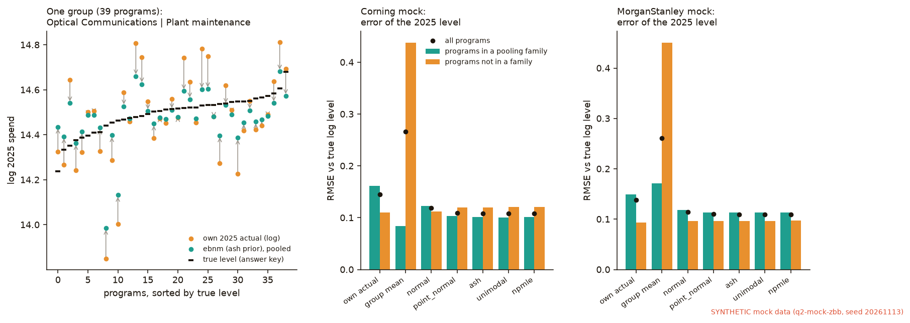
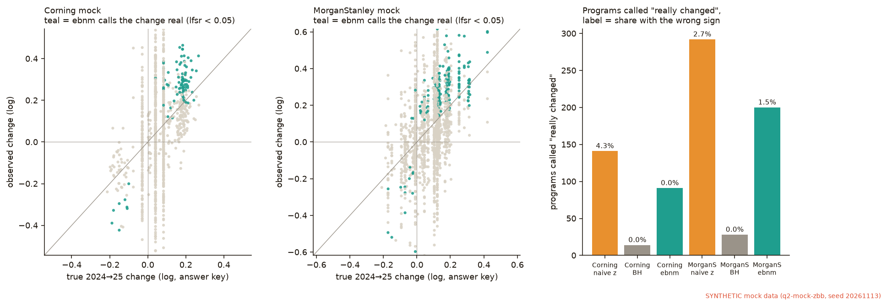
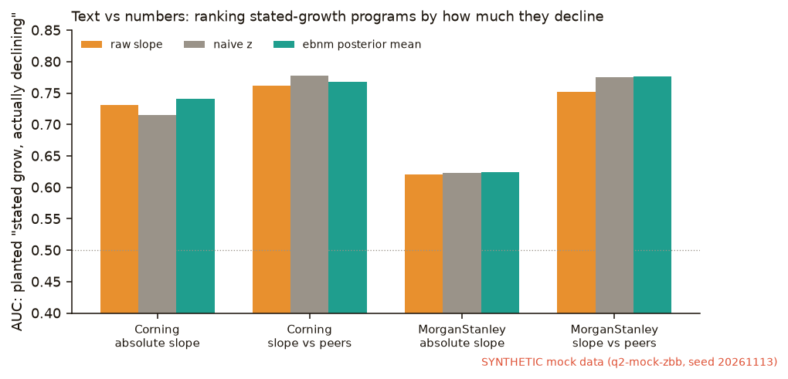
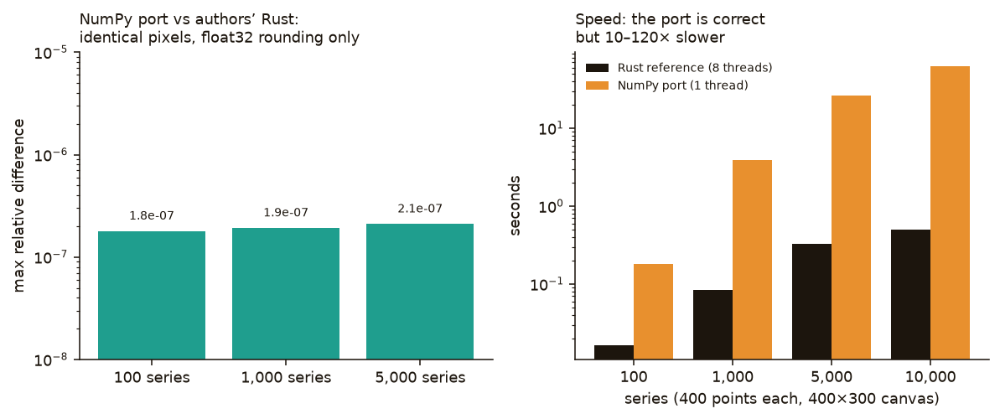
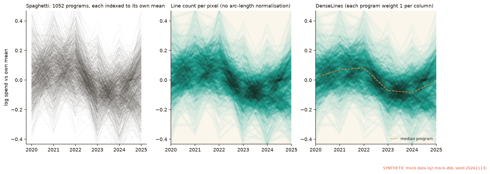
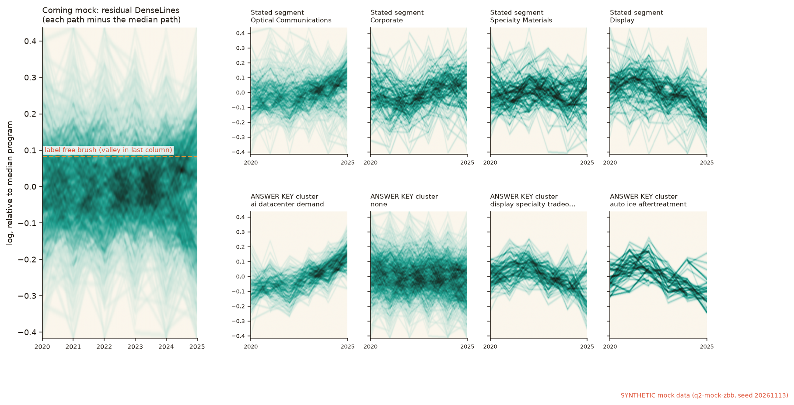
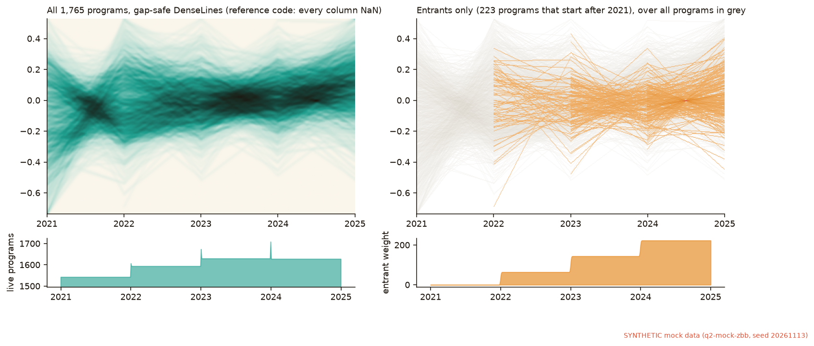

Friday · November 13, 2026 · scheduled edition · aimed at Q2 · exotic · SYNTHETIC data
Methods scout
The first edition for Q2: hundreds to thousands of programs, each with a description, a few noisy years, and no long history. One method from statistical genetics answers “which of these moves are real?” One from visualization research answers “how do you look at a thousand short lines at once?” Both were run on the clearly labelled SYNTHETIC mock budgets built today, so every answer can be scored against a known truth.
● ebnm pooling cuts the error in each program’s 2025 level by 26% (Corning mock) and 21% (Morgan Stanley mock), with no tuning● “Is this year-on-year move real?” ebnm calls 91 Corning-mock programs, all with the right sign. BH calls only 14.● DenseLines port matches the authors’ Rust pixel for pixel, but the reference turns every column NaN once programs start or stop● A residual DenseLines brush plus a text keyword finds 94% of the hidden AI-demand group, but the brush is bandwidth-fragile
The short version
Data first. Everything below runs on SYNTHETIC mock data: the two zero-based-budgeting mocks built on 2026-11-13 (Drive folder “Q2 mock ZBB datasets (synthetic, 2026-11-13)”; seed 20261113). They are modeled on publicly reported totals for Corning Incorporated and Morgan Stanley. They are not either firm’s budgets. A teaching page walks through how the generator works, the files, and the planted answer key. Corning mock: 1,079 programs, FY2020–25. Morgan Stanley mock: 1,840 programs, FY2021–25. Each mock has a planted answer key, used here only for scoring. No real program-level budget data exists yet.
ebnm (empirical Bayes normal means, Stephens lab, Journal of Statistical Software 2025) recommend for promote workflow. You give it one noisy number and a standard error per program. It learns the spread of the true values across programs from the data, then shrinks each program by the right amount. Results: (1) Borrowing strength. The 2025-level error falls from 0.146 to 0.108 (log RMSE) on the Corning mock and from 0.138 to 0.109 on the Morgan Stanley mock. The 90% intervals from the scale-mixture prior cover 89.5% of true levels on both mocks. The flexible scale-mixture prior beats the textbook normal prior (James–Stein style): 0.108 vs 0.119. (2) Real change vs noise. On the Corning mock, a local false sign rate below 0.05 calls 91 of 971 year-on-year moves real, and none has the wrong sign. A naive z-test calls 141, with 4.3% wrong; Benjamini–Hochberg calls 14. (3) Text vs numbers. ebnm does not help find “says growth, actually declining.” Comparing each program’s slope with its peers does: AUC 0.62 → 0.78 on the Morgan Stanley mock, with or without ebnm.
DenseLines (density line charts, Moritz & Fisher, arXiv 2018) interesting. Each line gets a total weight of 1 per column, so a thousand series turn into one density instead of spaghetti. Results: (1) Our NumPy port is faithful to the authors’ Rust reference: the same nonzero pixels, and a relative difference of at most 2.1×10⁻⁷ (float32 rounding) at 100, 1,000 and 5,000 series. It is 10–120× slower. (2) The reference code fails on start/stop programs. One series that does not span a column makes that column NaN, so every column of both mocks is NaN (274 and 361 partial-span programs). The gap-safe fix is one line. (3) A residual DenseLines makes the hidden AI-demand group visible as an upper shoulder. A label-free valley brush recovers 75% of it at 51% precision; adding a text keyword lifts recall to 94%. The brush vanishes at smoothing ≥ 6 px, though, so it is a visual hint, not a test. Arc-length normalisation barely matters at 5–6 points per series.
Data used: SYNTHETIC mock ZBB datasets only (box copy /workspace/q2-mock-zbb/output/, same files as the Drive folder). Only aggregate numbers, fitted structure and charts are shown. Program-level CSVs are not republished. Scripts and JSON: docs/methods-scout/runs/2026-11-13/. Descriptive work only. No forecasts, and nothing here touches the Q1 Y-9C panel or its sealed forecast window.
Q2
Where the question stands
Q2 (2026-11-13), refined and approved: “Suppose we have hundreds to thousands of programs. Each one has free-text descriptions plus tabular data, which we turn into categories and implied features, and each has only a few noisy periods of numbers. Past tracking trends and category mix over time, what can we reliably learn about each program and about the portfolio as a whole?” Jared’s verbatim wording and the five sub-questions.
Progress today, SYNTHETIC only.Q2.1 borrowing strength: yes, by a lot. Pooling by stated segment × function with an estimated prior cuts per-program level error by 21–26%. For programs in a real pooling family the cut is 37% (Corning mock, 0.161 → 0.101). Programs that are alone in their group lose a little (0.110 → 0.120). Q2.2 text vs numbers: the lift comes from the comparison design (slope against peers), not from shrinkage. Q2.3 real change vs noise: program-level calls are well calibrated: wrong-sign rate 0% at lfsr ≤ 0.05, 11–13% at 0.05–0.2 and 39–40% at 0.2–0.5. At portfolio level, noise is only about 2% of the total change in the answer key, and EB-denoised behaviour does not move the decomposition closer to the truth (Corning closer by $5.4M; Morgan Stanley further away by $88M). Q2.4 structure: residual DenseLines shows the hidden AI-demand co-movement, and text plus brush recovers 94% of it. Q2.5 seeing it: DenseLines works for a thousand short lines once it is made gap-safe. Status: in progress.
Data searchReal program-level budgets: missing
The SYNTHETIC mocks exist in Drive and on the box, and they were used as is. Real program-level budgets, actuals, headcount and decision packages are still missing for any firm. Q1’s missing data is unchanged; no Q1 analysis was run today.
Method 01
ebnm: how much to trust each program’s own number
Willwerscheid, Carbonetto & Stephens (2025), Journal of Statistical Software 114(3):1–33, doi:10.18637/jss.v114.i03 · CRAN ebnm 1.1-42 (2025-10-10), with ashr 2.2-63 and mixsqp 0.3-54 · statistical genetics (Stephens lab, University of Chicago) · niche outside genomics · recommend for the promote workflow — not promoted
Found via. Journal · Journal of Statistical Software, https://www.jstatsoft.org/article/view/v114i03 · found by web search on 2026-11-13 for an empirical-Bayes tool aimed at Q2.1/Q2.3 · field: statistical genetics (gene-expression and GWAS shrinkage). Also used: https://github.com/stephenslab/ebnm and https://cran.r-project.org/package=ebnm. The adaptive-shrinkage idea behind the default prior is Stephens (2017), “False discovery rates: a new deal”, Biostatistics 18(2):275–294. X and SSRN were not the discovery path.
Target question. Q2.1 (borrowing strength) and Q2.3 (real change or noise), with one analysis on Q2.2 (text vs numbers).
What it is, and why it fits the bar. Each program gives an observation \(x_j\) with a standard error \(s_j\). The model is \(x_j \mid \theta_j \sim N(\theta_j, s_j^2)\) and \(\theta_j \sim g\). ebnm estimates the prior \(g\) itself by maximum marginal likelihood, from one of 15 families (normal, point-normal, scale mixtures, unimodal, NPMLE, …). It then returns posterior means, posterior SDs and the local false sign rate (lfsr): the posterior probability that you have the sign of \(\theta_j\) wrong. You choose no prior hyperparameters and no penalty. Each fit took 0.003–0.6 s on 1,000–1,700 programs. \(s_j\) comes from the observable spread of each program’s budget-minus-actual gaps, scaled by the dataset README’s stated budget/actual noise ratio. It is shrunk toward the group median. The scale-mixture 90% intervals cover 89.5% of true levels on both mocks, so these standard errors are not badly off.
1a · Borrowing strength: each program’s 2025 level (Q2.1)
Here \(x_j\) is the log 2025 actual minus the mean of its stated segment × function group. ebnm shrinks the deviation, and we add the group mean back. The comparison is against the answer-key true level.
Estimator
Corning mock RMSE
in a pooling family
not in a family
Morgan Stanley mock RMSE
in a family
not in a family
Own 2025 actual (no pooling)
0.146
0.161
0.110
0.138
0.149
0.093
Group mean (complete pooling)
0.267
0.084
0.438
0.261
0.171
0.451
ebnm, normal prior (James–Stein-like)
0.119
0.123
0.112
0.114
0.119
0.096
ebnm, point-normal
0.109
0.104
0.120
0.110
0.114
0.097
ebnm, scale mixture (ash)
0.108
0.101
0.120
0.109
0.113
0.096
ebnm, unimodal
0.108
0.101
0.121
0.110
0.113
0.097
ebnm, NPMLE
0.108
0.101
0.121
0.110
0.113
0.098
Corning mock: 998 programs active in 2025, 652 of them in a planted pooling family. Morgan Stanley mock: 1,702 and 1,320. The scale-mixture prior does what a single normal prior cannot. It shrinks hard where a group is tight (real families) and lightly where a group is a grab bag. It still loses a little on programs that have no family at all: 0.110 → 0.120 on Corning. That is the target for the Math avenue below. Complete pooling wins for real families on the Corning mock (0.084), but it is a disaster for everything else (0.438). ebnm never has to be told which case it is in. The deconvolver family was not run: it takes z-scores with \(s = 1\), not heteroskedastic standard errors.

Figure 1. Left: one stated group on the Corning mock. Arrows run from each program’s own number (amber) to the ebnm estimate (teal); black ticks are the true levels from the answer key. Right: error by estimator, split by whether a program belongs to a planted pooling family. SYNTHETIC.
1b · Real change or noise: 2024 → 2025 (Q2.3)
Here \(x_j\) is the change in log actual and \(s_j = \sqrt2\,\hat\sigma_j\). The prior is a scale mixture centred at 0. A program is called “really changed” when lfsr < 0.05.
Rule
Corning calls
wrong sign
Morgan Stanley calls
wrong sign
Naive |z| > 1.96
141
4.3%
292
2.7%
Naive + Benjamini–Hochberg q < 0.05
14
0%
28
0%
ebnm (ash), lfsr < 0.05
91
0%
200
1.5%
ebnm (point-normal), lfsr < 0.05
104
0%
199
1.5%
Relative to the typical change (+7.7% / +9.2%): naive |z| > 1.96
108
10.2%
190
8.4%
Relative to the typical change: ebnm lfsr < 0.05
45
2.2%
68
0%
ebnm finds 6.5× (Corning) and 7× (Morgan Stanley) as many real moves as BH, at a wrong-sign rate of at most 1.5% (wrong-sign is against the true change in the answer key). lfsr is also calibrated across its range: in the 0.05–0.2 bin, 11% (Corning) and 13% (Morgan Stanley) of signs are wrong; in the 0.2–0.5 bin, 40% and 39%. Shrunk changes are also closer to the truth: RMSE 0.200 → 0.079 (Corning) and 0.196 → 0.099 (Morgan Stanley). A plain normal prior is slightly better on RMSE here (0.070, 0.080), because true changes cluster tightly around a common drift.
Portfolio-level mix vs behaviour. In the answer key, noise is −2.25% of the Corning total change. Summing EB-denoised levels for the 971 continuing programs moves the behaviour term from $340.1M (raw) to $345.5M, against a true $359.6M: slightly closer. On the Morgan Stanley mock it moves from $5.064B to $5.151B, against a true $4.980B: further away. Shrinking in logs and summing in dollars does not fix an aggregate that was already 98% right. The method is for programs, not totals.

Figure 2. Observed vs true year-on-year change. Teal = ebnm says the move is real. Right: number of calls and their wrong-sign rate (vs the answer key). SYNTHETIC.
1c · Text vs numbers: “stated growth, actually declining” (Q2.2)
Here \(x_j\) is the OLS slope of log actual over a program’s years (at least 3), and \(s_j = \hat\sigma_j/\sqrt{S_{xx}}\). We take programs whose description says grow or transform (268 Corning, 201 Morgan Stanley) and rank them by how strongly the numbers decline. The answer key plants 6 and 27 such mismatches.
Design
Corning AUC: raw / naive z / ebnm
Morgan Stanley AUC: raw / naive z / ebnm
Absolute slope
0.731 / 0.715 / 0.741
0.620 / 0.623 / 0.624
Slope minus the median slope of the same segment × function
0.762 / 0.777 / 0.768
0.752 / 0.775 / 0.777
On the Morgan Stanley mock, the top 27 by ebnm’s peer-relative posterior mean contain 11 of the 27 planted programs (precision 0.41, the same as naive z). Flagging by lfsr < 0.05 is too strict: 4 flags, 2 hits. Honest status: shrinkage adds nothing over a z-score here. The gain comes from comparing a program with its peers. A covariate-moderated prior (Math avenue) is the version that could use the text.

Figure 3. AUC for ranking the planted “stated grow, actually declining” programs. The dotted line is chance. SYNTHETIC.
1 · EngineeringEffort M
A Rust core for the ash and point-normal fits, with R ebnm as the oracle
A thousand programs × categories × cycles × bootstraps means thousands of fits. Port the mixture-weight solve (mixsqp’s SQP) and the posterior summaries to Rust, with a thin Python binding.
Test. Parity with today’s inputs: log-likelihood −145.7808 (Corning, ash) and −238.8506 (Morgan Stanley), posterior means within 1e-6. Then wall time against R’s 0.03 s per fit.
2 · MathEffort M–L
Let the description set the prior
Make \(g\) depend on text-derived features (stated category, intent, driver), as in covariate-powered empirical Bayes. Today one global prior made lone programs slightly worse than their own number.
Test. On non-family programs, beat both the own number (0.110 / 0.093) and global ash (0.120 / 0.096) on both mocks, with no loss on families.
3 · New use on our dataTop pick
“Is this move real?” flags for every program in a budget cycle
One column per program, per cycle: shrunk change, interval, lfsr. It gives 6–7× the calls of BH at ≤ 1.5% wrong sign, needs no tuning, and runs in milliseconds. Effort S.
Test. On a mock regenerated with a new seed (and later on real data), a wrong-sign rate ≤ 5% among lfsr < 0.05 calls, at least 3× BH’s calls, and lfsr bins calibrated within ±5 points.
Method 02
DenseLines: a thousand short lines as one density
Moritz & Fisher (2018), “Visualizing a Million Time Series with the Density Line Chart”, arXiv:1808.06019 (cs.HC) · reference implementations in Rust (line-density-rust, BSD-3) and JavaScript/WebGL by the first author · visualization / HCI · obscure outside visualization research · interesting — not promoted
Found via. arXiv · https://arxiv.org/abs/1808.06019 · found by web search on 2026-11-13 for a Q2.5 chart (“one chart for a thousand short noisy series”) · field: visualization research (UW Interactive Data Lab; now CMU Data Interaction Group). Code: the author’s own repo, https://github.com/domoritz/line-density-rust (commit 083890c, 2025-04-24), and the WebGL demo https://github.com/domoritz/line-density. This is the library-author route the MD asked for. X and SSRN were not the discovery path.
Target question. Q2.5 (seeing it), with Q2.4 (hidden structure) as the second use.
What it is. Draw each series into its own binary raster. Divide each column by that series’ pixel count in that column, so a steep, noisy line spreads one unit of weight over many pixels instead of painting them all. Then sum over series. The result is a density with exactly \(n\) units per column. Trends show up as dense ridges and outliers as faint isolated strands. The method has no parameters beyond canvas size; colour scale and display blur are presentation choices. Three analyses: (2a) a faithful port and parity check against the authors’ code, plus speed; (2b) the Q2.5 picture on 1,052 Corning-mock programs, with a test of whether normalisation matters at our series length; (2c) residual DenseLines for hidden groups (Q2.4), and the start/stop problem.
2a · Faithful port, checked against the original
denselines.py reproduces imageproc 0.25’s Bresenham iterator (float32 error term, truncating casts), set-to-1 pixel semantics and per-series column normalisation. We used the authors’ run_series and sum_images unchanged in a small Rust harness that only adds file I/O, and fed both sides the reference’s own demo generator (sine + N(0, 12) noise, 400 × 300 canvas).
Series
Same nonzero pixels
Max relative difference
Rust (8 threads), s
NumPy port, s
100
yes
1.8×10⁻⁷
0.016
0.18
1,000
yes
1.9×10⁻⁷
0.083
3.9
5,000
yes
2.1×10⁻⁷
0.32
25.9
10,000 (speed only)
—
—
0.50
62.2
Parity is exact up to float32 summation order. The port is correct but slow, and a 50,000-series run was killed by the box’s 15.6 GB memory limit before it finished. Bug found in the reference: if any series does not cover a column, that column is 0/0 = NaN, and NaN poisons the summed column. With 50 series, 10 of which stop at column 300, the reference returns 100 NaN columns out of 400. The port reproduces this by default and has a gap_safe switch that drops it (0 NaN columns).

Figure 4. Left: max relative difference against the Rust reference. Right: run time. Rust is 8-threaded; the port is single-threaded NumPy.
2b · The Q2.5 picture: 1,052 programs, each indexed to its own mean

Figure 5. Corning mock. Spaghetti (left), line count without normalisation (middle), DenseLines (right) with the median program dashed. Display uses a 1.6-px blur and a power colour scale. SYNTHETIC.
The DenseLines panel shows the common 2022–2024 dip and the split of programs in 2025, which the spaghetti hides. Does arc-length normalisation matter at our length? Hardly. The noisiest 10% of programs (by \(\hat\sigma\)) take 12.0% of the ink without normalisation and 10.7% with it (Morgan Stanley mock: 10.7% vs 10.1%). Each chart is about equally far from the same chart drawn from the answer-key true paths: mean column total variation 0.690 vs 0.687, Wasserstein 0.055 vs 0.053 log (Morgan Stanley mock: 0.596 vs 0.593 and 0.036 vs 0.035). With 5–6 points across 500 pixels, lines are rarely steep, so normalisation has little to do. The paper’s gain shows up with long, high-frequency series. The real gain here is the density view itself and the gap-safe fix. Noise, not line steepness, is what separates our chart from the truth, which is why the Math avenue below pairs DenseLines with ebnm.
2c · Hidden structure (Q2.4) and start/stop programs
Subtract the median path from every program, then draw DenseLines of the residuals. Small multiples by stated segment do not show the planted co-moving groups, which cut across segments. The same panels by answer-key cluster, shown only as a reveal, do: AI-demand programs rise together after 2023, and auto aftertreatment falls.

Figure 6. Corning mock residual DenseLines. Top row: by stated segment. Bottom row: by answer-key cluster (reveal only; not used to draw the main panel or the brush). SYNTHETIC.
A label-free brush. Find the valley between the main ridge and the upper shoulder in the last column, and select every program that ends above it.
Hidden group (answer key)
Members
Text keyword only
DenseLines brush only
Brush OR keyword
Corning mock: AI / datacenter demand
205
recall 66%, precision 100%
recall 75%, precision 51%
recall 94%, precision 56%
Morgan Stanley mock: equity-market activity
194
recall 26%, precision 23%
recall 75%, precision 23%
recall 81%, precision 21%
Morgan Stanley mock: wealth fee-based growth
308
recall 55%, precision 77%
recall 29%, precision 14%
recall 65%, precision 27%
Two-column brushing (2024 and 2025) raises Corning precision to 63% but cuts recall to 46%. Fragility: the valley exists at 2–4 px of profile smoothing and disappears at 6–8 px, on both mocks. Read it as a picture that points at a group, not as a test. Text and numbers find different members. The keyword finds the programs whose descriptions mention the driver; the chart finds the ones that move without saying so. That is Q2.2 and Q2.4 meeting.

Figure 7. Morgan Stanley mock: gap-safe DenseLines of all programs (left), entrants layered over the rest (right), and strips for live programs and entrant weight. The reference code would return NaN in all 500 columns for this panel. SYNTHETIC.
Start/stop is the normal case in a budget portfolio: 274 of 1,052 Corning-mock and 361 of 1,765 Morgan Stanley-mock series do not span the full period, and the reference renders both panels as entirely NaN. With the gap-safe rule, each program still carries one unit per column it is alive. A live-count strip keeps entry waves from being misread as density changes.
1 · EngineeringTop pick
Gap-safe, weighted DenseLines in Rust with a Python binding
The reference NaNs out on start/stop programs, and the exact NumPy port is 10–120× slower. Build a Rust core (parity first, then speed) with gap-safe columns, per-series weights and a live-count channel. Effort S–M.
Test. Relative difference ≤ 1e-6 vs commit 083890c on full-span inputs (today’s port: 2.1e-7), zero NaN columns on both mocks, and ≤ 2× the reference’s time at 10,000 series.
2 · MathEffort M
Posterior DenseLines: draw what the program probably is, not what it reported
Replace each noisy path with ebnm posterior draws (weight 1/draws). Noise, not steepness, is what separates today’s chart from the truth chart.
Test. Lower Wasserstein distance to the true-path chart than today’s 0.053 (Corning) and 0.035 (Morgan Stanley), and no false branch on a mock with the clusters switched off.
3 · New use on our dataEffort S
Residual brush plus text keyword as a hidden-group finder
Text and chart find different members. Together they reach 94% recall on the AI-demand group. The brush needs a bandwidth-free branch test.
Test. A dip-style test with a year-shuffle null that keeps recall ≥ 0.7 at precision ≥ 0.5 on both mocks, at any smoothing from 2 to 8 px.
Watch
Watchlist additions
Both methods are added as trialed on the watchlist. New watch items: flashier (empirical Bayes matrix factorization, Wang & Stephens, JMLR 2021) for Q2.4 groups that co-move or trade off; deconvolveR (Efron’s g-modeling, Narasimhan & Efron, JSS 2020) as a smooth nonparametric prior; covariate-powered empirical Bayes (Ignatiadis & Wager, arXiv:1906.01611) for the text-moderated prior; and lasagna plots (Swihart et al., Epidemiology 2010) as a second Q2.5 chart. Nothing already trialed was rerun. MaxLIPO stays on the watchlist as the MD’s example. Research-lab PRs #20, #21 and #25 were not touched. No APPROVAL.md was written; nothing is promoted.